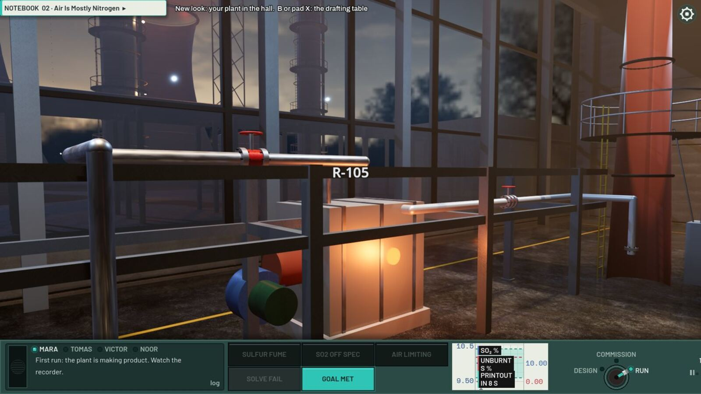

What it teaches. Mass balances, moles against kilograms, and the first equilibrium on a lab bench. You size feeds so that nothing is wasted.
4 jobs: L01 to L04. Site: QC lab. All of its jobs are drawn in the new look: a 3D hall and lab.

New look. The burner house in the new look, with your plant standing in the hall once it runs
L01 Moles, Not Kilograms New look
QC lab, pilot skid
Brief
We need 10 kmol of ammonia an hour for the lab. Feeds are metered in kilograms. Do not vent hydrogen; it is the expensive one.
The banks read kg/h. The reactor counts molecules. Call it: predict before your first commission. The answer box locks when you commission; a right call earns a star.
Goal
NH₃ product 170.3 kg/h, within 1 %
Vented H₂ and N₂ at most 1 % of the feed, by mass (kg/h vented over kg/h fed)
Stars
Goal met: 10 kmol/h of NH₃ and at most 1 % of the feed vented
At most 0.1 % of the feed vented, by mass: set the two banks to exactly 3 mol of H₂ for every 1 mol of N₂
Call it: the kg/h of H₂ the job needs, within 1 %
If it fails
The printout names one of these when a goal is missed:
The ammonia is off target.
Hydrogen is venting.
Nitrogen is venting.
Coach steps (hints that show how to build)
Open the parts rack and set a cylinder bank on the pad. Nitrogen first.a plant can only make what comes in at the feed.
Dial the bank to a flow in kilograms an hour. The card shows kilomoles beside it.the bank is metered by mass, but the reaction counts molecules.
Place the mixer, the ideal reactor and a second bank for hydrogen.the reactor has one inlet; the mixer joins the two banks before it.
Pipe it: banks to the mixer, mixer to the reactor, reactor to the separator, then the tank and the vent.every outlet must end in a unit, a tank or the vent.
Turn the key to commission.the plant settles in one go; you read it, change a dial, run it again.
Read the tank: kilomoles of ammonia against the target.the goal is in moles, so read the plant in moles.
Open the vent stream and compare kmol/h of H₂ and N₂.whatever leaves by the vent is feed you paid for and did not use.
Ask Why? and read what the feed ratio did.the explanation is built from your own numbers.
L02 Air Is Mostly Nitrogen New look
Sulfur burner house
Brief
Sulfur in, SO₂ out. The acid plant wants the gas at ten percent. Do not let sulfur fume out of the stack.
Air is the cheap reagent, but the blower is not free. Call it: predict before your first commission. The answer box locks when you commission; a right call earns a star.
Goal
Burn at least 99.9 kmol/h of sulfur (99.9 % of the pit)
Burner gas 10 % SO₂, within 0.5 percentage points
Stars
Burn 99.9 % of the sulfur at 10 % SO₂, within 0.5 percentage points
Burner gas at 10.0 % SO₂ or richer: a smaller blower
Call it: O₂ mol % in the burner gas of your first run, within 2 %
If it fails
The printout names one of these when a goal is missed:
Sulfur is fuming out of the stack.
The pit is not feeding the full rate.
The burner gas is too rich.
The burner gas is too weak.
Coach steps (hints that show how to build)
Put the blower on the air line. The air flow is the dial on the air bank F-102; the blower only lifts the pressure.air carries the oxygen the sulfur needs, and the air bank sets how much.
Mix the sulfur and the air before the burner.the burner has one inlet.
Place the sulfur burner after the mixer.S + O₂ makes SO₂ here, mole for mole.
Put the stack on the burner outlet. It reads the gas, and on this level it is the only place the gas can go (no product tank).the stack is the analyser; it shows what the burner really makes.
Pipe it: air to the blower to the mixer, the pit to the mixer, then burner and stack.every outlet ends in a unit or the stack.
Commission and watch the stack plume.a yellow plume means sulfur got through unburnt.
Read SO₂ and O₂ on the stack, in mole percent.the acid plant buys a mole fraction, not a mass.
Ask Why? and follow the oxygen sum.it uses your own air flow.
L03 The Unknown Fuel New look
The old boiler house
Brief
The new gas supplier will not tell us what is in the line. Fire the boiler at ten percent excess air anyway.
Burn some, read the analyser, then do the sum. Every extra test burn is gas we paid for. Retry the job and the same gas comes down the line. Call it: on this job you may call after a test burn. Burn once, read the analyser, then write your answer; it locks when you enter it, and a right call earns a star.
Goal
Flue gas at 10 % excess air, within 1 percentage point
Complete combustion: no unburnt fuel, no CO
Stars
Excess air 10 %, within 1 percentage point, and no fuel slip
At most 3 test burns
Call it: the fuel, as carbon atoms per molecule
If it fails
The printout names one of these when a goal is missed:
Lean: heat is going up the stack.
Rich: CO and unburnt fuel are leaving by the stack.
Too tight on air.
Coach steps (hints that show how to build)
Put the blower on the air intake. The air flow is your dial, on the air bank.the fuel line is fixed; air is what you control.
Mix the fuel and the air.the burner has one inlet.
Place the BURNER part (the boiler comes next) after the mixer, on a free tile.the fuel burns here; the flue leaves hot.
Add the boiler and the flue analyser stack.the boiler keeps the heat; the analyser reads what is left.
Pipe it: air to the blower to the mixer, fuel to the mixer, then burner, boiler, stack.every outlet ends in a unit or the stack.
Run a test burn with plenty of air and read the flue analyser.complete combustion shows the fuel in the CO₂ and H₂O it makes.
Read CO₂, H₂O, O₂ and CO. CO₂ to H₂O is one to two for methane, three to four for propane.the carbon and hydrogen atoms in the flue are the ones that were in the fuel.
Ask Why? and follow the oxygen count.oxygen burned is CO₂ plus half the H₂O.
L04 Exam Bridge: The Lab Notebook New look
QC lab, the notebook shelf
Brief
Old notebook: 2.00 t of N₂ and 1.00 t of H₂ an hour into the ideal reactor. Before you run it, tell me what comes out.
Write the answer down first. Then build it and see whether the printout agrees. Call it: predict before your first commission. The answer box locks when you commission; a right call earns a star.
Goal
NH₃ to the tank matches the notebook answer, within 0.5 %
Leftover H₂ to the vent matches the notebook answer, within 0.5 %
Stars
Build the notebook plant: NH₃ and leftover H₂ match
Name the limiting reagent
Call it: NH₃ out in kg/h, within 0.5 %
If it fails
The printout names one of these when a goal is missed:
The plant does not match the notebook.
Coach steps (hints that show how to build)
Call it first: write your NH₃ answer and name the limiting reagent.a prediction after the run is a reading, not a prediction.
Build the bench from the notebook: two feeds (2.00 t N₂ and 1.00 t H₂ an hour) into a mixer, the ideal reactor, the separator, the product tank and the vent, all piped.the printout checks your call against the plant you built.
Turn the key to commission the bench.the printout and the check against your call come only after the run.
Read the printout beside the notebook working.the book rounds the atomic masses; the engine does not.